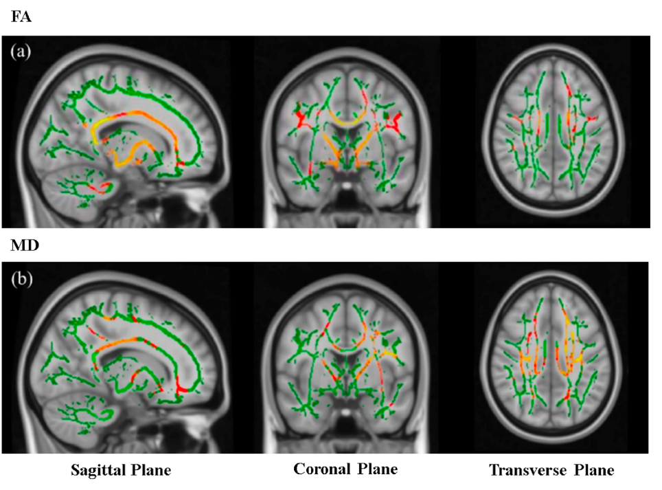

Since our team focused on mechanisms of brain-specific effects of musical training interventions, this is a study of the hierarchical structure of the functional brain systems of composers. In this work, we recruited 18 composers and 20 controls under fMRI scanning, based on the Tract-Based Spatial Statistics method, we found the differences in white matter skeleton between composers and the controls. Subsequently, we compared the differences in structural connectivity between the two groups by probabilistic tracing from the orbitofrontal cortex. We found that composers had higher anisotropy scores and mean diffusion rates in white matter regions. Functional connectivity also provided evidence for the more robust relationship in composers’ brain regions. Our work suggests that the structural and functional connectivity between the orbitofrontal cortex and other higher cognitive areas of composers is stronger than non-musicians, which improves the understanding of the effect of composition training on structural and functional neuroplasticity.
TBSS was used for voxel-wise analysis of whole brain DTI measures, t-statistical maps of FA and MD group differences (composers vs. controls) of TBSS results views overlaid on the MNI template was shown in Figure 1. We applied a threshold range of 0.2 to 0.8 for the FA and MD values, with the aim of excluding peripheral tracts exhibiting notable inter-subject variability and potential partial volume effects with grey matter. Figure 1(a) shows that the composer had significantly greater FA values than controls for structures such as the corpus callosum knee, corpus callosum trunk, corpus callosum compression, cerebral peduncle, anterior branch of the internal capsule, the posterior branch of the internal capsule, anterior radioulnar corona, epithalamus radiation and so on. Figure 1(b) shows that composers had significantly greater MD values than controls for structures such as the anterior radial crown, superior radial crown, posterior radial crown, anterior branch of the internal capsule, the posterior branch of the internal capsule, splenium of the corpus callosum, superior longitudinal fasciculus, and superior frontal occipital fasciculus, etc.

The results of probabilistic tracing in diffusion tensor imaging of composers and controls are shown in Figure 2, which shows that fiber bundles originating from ROI have a higher probability passing through more areas compared to the control group. The seed point (starting point) was chosen as the ROI of the orbital frontal cortex. The colored voxel dots (red and yellow) correspond to the voxels that the fiber bundle has a probability of passing through, with red to yellow indicating weak to strong probability of passing through. The fiber tracts from the seed point cover the entire left frontal region and even extend to the parietal and temporal regions. In contrast, in the non-musician group, the fiber tracts from the seed point (frontal, middle gyrus, orbitalis) only reach the frontal middle and inferior gyrus. At the level of the fiber tracts, in composers, the fiber tracts from the seed point to the regions of the anterior radial crown, superior radial crown, corpus callosum, splenium of the corpus callosum, corpus callosum compression, anterior branch of the internal capsule, posterior branch of the internal capsule, and external capsule. Moreover, the probabilistic tracing results showed that many regions in the control group were not significantly connected. In contrast, the composer's tracing results went through a large area of the brain and are therefore represented in this figure as results.
Functional connectivity results showed that the differences between composer and controls. As shown in Figure 3, compared with controls, the stronger connections of composers are concentrated in bilateral dorsal as well as ventral attention network, such as insula, inferior temporal gyrus, postcentral gyrus, inferior parietal marginal angular gyrus, etc. The lower connections of composers are concentrated in the left DMN, such as angular gyrus, middle temporal gyrus, medial superior frontal gyrus, middle occipital gyrus and so on. All function connection results are statistically checked（p<0.05）

This work focuses on the brain structural differences between composers and controls. The white matter skeleton showed distinct differences between the two groups, particularly in the corpus callosum knee, trunk, and capsule. Composers exhibited higher FA values in structures like the corpus callosum and internal capsule, while MD values were elevated in specific regions including the radial crown and branches of the internal capsule, as well as the corpus callosum and longitudinal fasciculus. This indicates that training in composition enhances the integrity of the composer's diverse white matter structures, reducing the level of separation among the different layers of white matter. Subsequently, we found that the fiber bundles originated from left OFC have a higher probability passing through more areas compared to the control group, suggesting that composers had better connectivity, greater integration, and more efficient information transfer. Moreover, we also found that composers' functional connectivity in the left OFC and the dorsal as well as ventral attention network was stronger than controls. Starting from the seed point, the overall structural and functional results are consistent, collectively revealing specificity in the connectivity to the OFC between composers and non-musicians. This suggests that compositional training has the potential to induce plasticity in the brain.